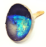

Cats have excellent night vision and can see at one sixth the light level required for human vision. This is partly the result of cat eyes having a ''tapetum lucidum'', which reflects any light that passes through the retina back into the eye, thereby increasing the eye's sensitivity to dim light. Large pupils are an adaptation to dim light. The domestic cat has slit pupils, which allow it to focus bright light without chromatic aberration. At low
Night vision
ability to see in low light conditions
Night vision requires both sufficient spectral rangeand sufficient intensity range.Humans have poor night vision compared to many animals such as cats, dogs,foxes and
rabbits, in part because the human eye lacks a tapetum lucidum, tissue behind the retina that reflects light back through the retina thus increasing the light available to the photoreceptors.
Tapetum lucidum
Layer of eye tissue which aids in night vision

Young cats exhibit a blue appearance, which shifts to yellow with age, with adult coloration ranging from light orange to green. While enhancing night vision, increased light scatter within the tapetum slightly compromises visual acuity.
Cat
Small domesticated carnivorous mammal
...cats have dozens of movable whiskers (vibrissae) over their body, especially their faces. These provide information on the width of gaps and on the location of objects in the dark , both by touching objects directly and by sensing air currents.
Night vision
ability to see in low light conditions
Many animals have better night vision than humans do, the result of one or more differences in the morphology and anatomy of their eyes. These include having a larger eyeball, a larger lens, a